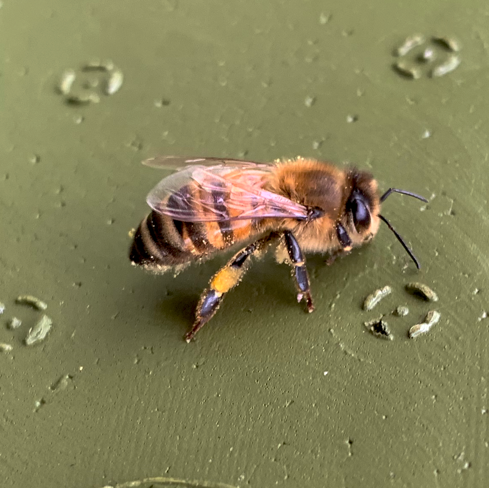
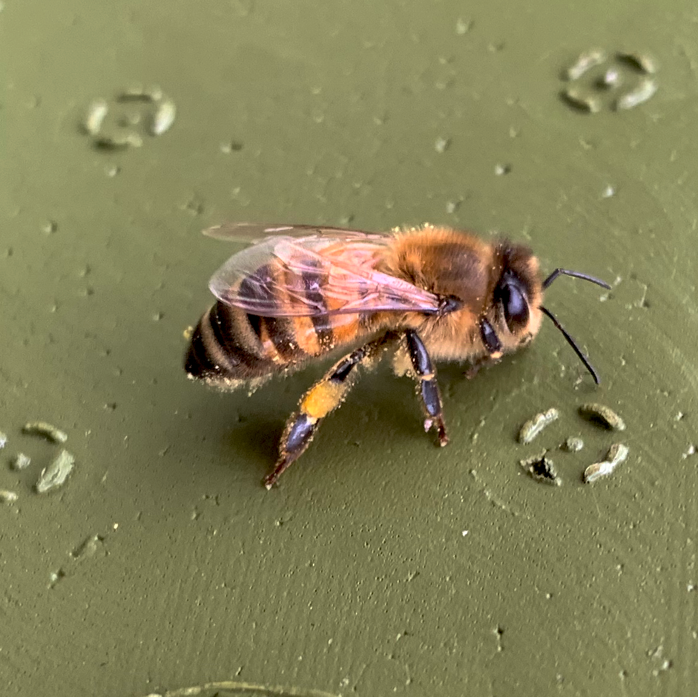

Lars Christiansen
Lars Christiansen på 70 år, har været hobby biavler i 8 år. Lars har ude i sin have i Hellerup 6 bistader stående, hvor han årligt laver 330 glas honning til sig selv og sine venner. Til sidst i juni måned, mødes Lars og alle hans andre biavler venner, til en stor komsammen, hvor de alle smager hinandens høst. Lars og hans kone Rikke, fik øjnene åbnet op for biavl, da de var på besøg hos en ven i London. Her blev de vist rundt i vennens bistader, og meldte sig straks til "Beeschool" hvor de lærte alt det gode ved bierne og deres honning.
"I starten gik det kun ud på at få honning, men efter som tiden gik blev jeg mere og mere facineret af bierne og deres måde at overleve på" - Lars Christiansen.
Skal man være bange for bier? Nej bierne er noget af det mest fredelige siger Lars. Enten er de på vej ud efter noget pollen, eller er de på vej hjem igen. Bierne stikker kun hvis de føler sig truet, så hvis man har en fredelig tilgang til bierne, bliver man ikke stukket. Jeg bliver maks stukket én gang om året... hvis jeg er heldig, siger Lars Christiansen med et smil på læben.

 
